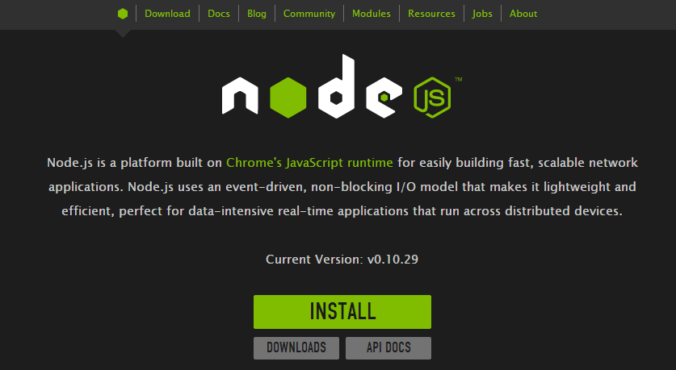

Protractor Installation
Requirements
NodeJs
To check if you have NodeJs installed, run this command at the command-line / terminal.
Go to jodejs.org

Click the install button to download the install package.
Run the install MSI and follow the instructions, and you're good to go.
Go to jodejs.org
Click the install button to download the install package.
Run the install DMG, and follow the instructions, and you're good to go.
Go to jodejs.org
Click the install button to download the install package.
Run the install and you're good to go.
JDK
To check if you have JDK installed, run this command at the command-line / terminal.
Go to Oracle Java Downloads site to get the install file. Click the Download link.

Accept the license agreement, and then select the correct file to download.
Windows x86 for 32-bit, or Windows x64 for 64-bit.
(if you are unsure, use the windows 32-bit version)

Run the downloaded EXE file, and go through the wizard to install the JDK.
Go to Oracle Java Downloads site to get the install file. Click the Download link.
Accept the license agreement, and then select the correct file to download.
Windows x86 for 32-bit, or Windows x64 for 64-bit.
(if you are unsure, use the windows 32-bit version)

Run the downloaded DMG file, and go through the wizard to install the JDK.
Installing
Use npm to install Protractor globally (omit the -g if you’d prefer not to install globally):
Check that Protractor is working by running protractor --version.
The Protractor install includes the following:
Installing the Selenium Server
Install the server and ChromeDriver, and then start the selenium server.
webdriver-manager start
You will see a lot of output logs, starting with INFO. The last line will be 'Info - Started
org.openqa.jetty.jetty.Server'.
Leave the server running while you conduct your test sessions.
Check the Protractor Docs for more information.